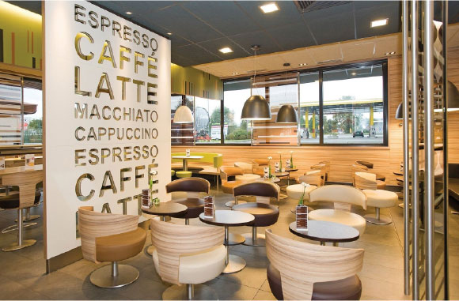
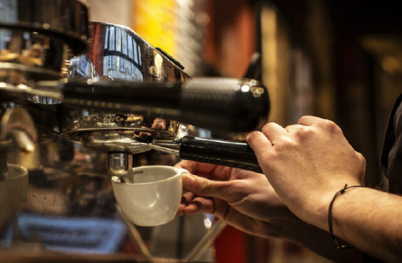
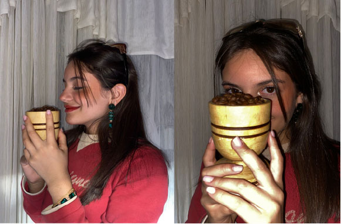
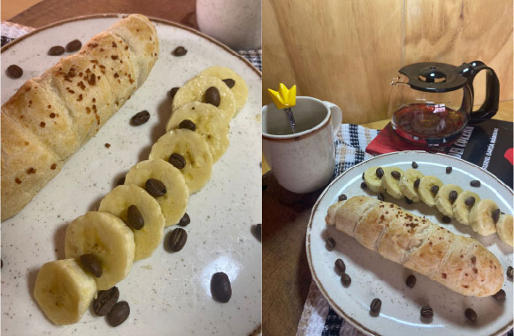

Sobre Nosotros
Descubre un refugio acogedor donde el arte del café se encuentra con la tranquilidad de un entorno natural. En cafetería Sendero, cada taza es una experiencia única que celebra la calidad, el sabor y el ambiente relajante.
Diseño interior inspirado en la naturaleza
Disfruta de un ambiente acogedor que combina materiales orgánicos, colores cálidos y formas suaves, pensados para brindarte una experiencia relajante y armoniosa.

Burbujeo de nuestras máquinas de espresso
Déjate llevar por el sutil sonido del agua transformándose en café. Cada burbuja marca el inicio de una experiencia única, acompañada del suave y constante molido de granos.

Aroma de granos recién tostados
Un torrente de fragancias cálidas y profundas invade los sentidos. Notas terrosas, dulces y amaderadas evocan paisajes de montaña y campos colombianos.

Variedad de perfiles de sabor
Cada taza es una exploración sensorial: desde notas afrutadas y cítricas hasta matices de cacao, nuez y caramelo que reflejan la riqueza de Colombia.

Siente la calidez de nuestras tazas
Abraza el instante en que tus manos encuentran el calor de una taza recién servida. Un momento íntimo y pausado para disfrutar sorbo a sorbo.